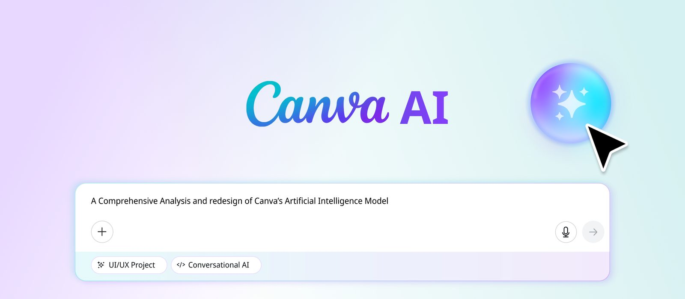
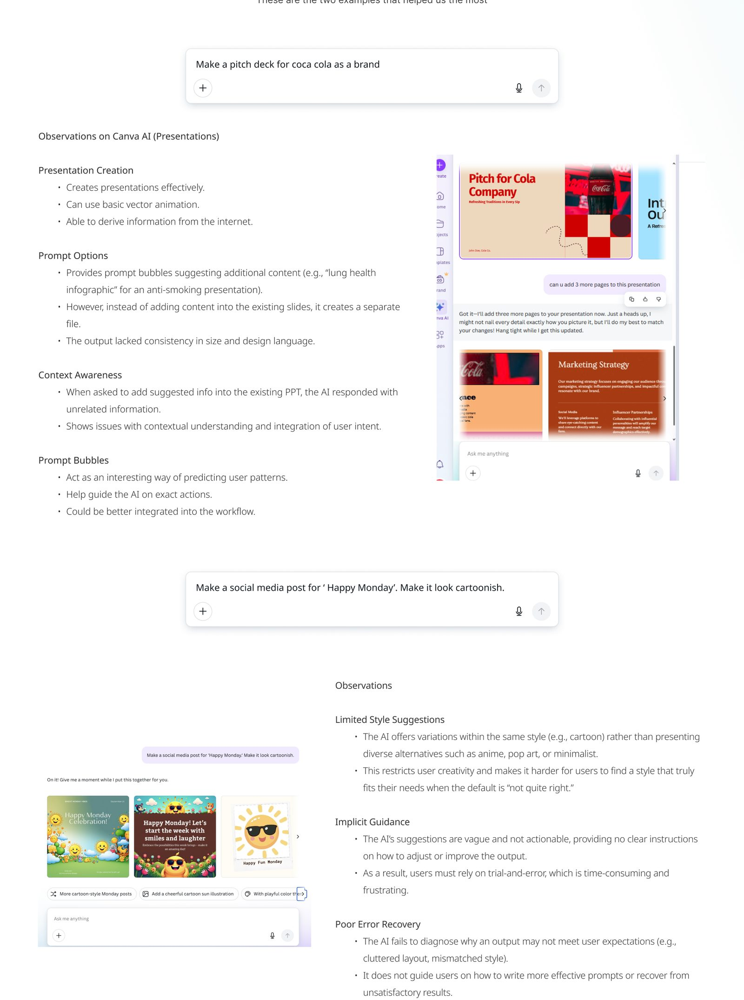
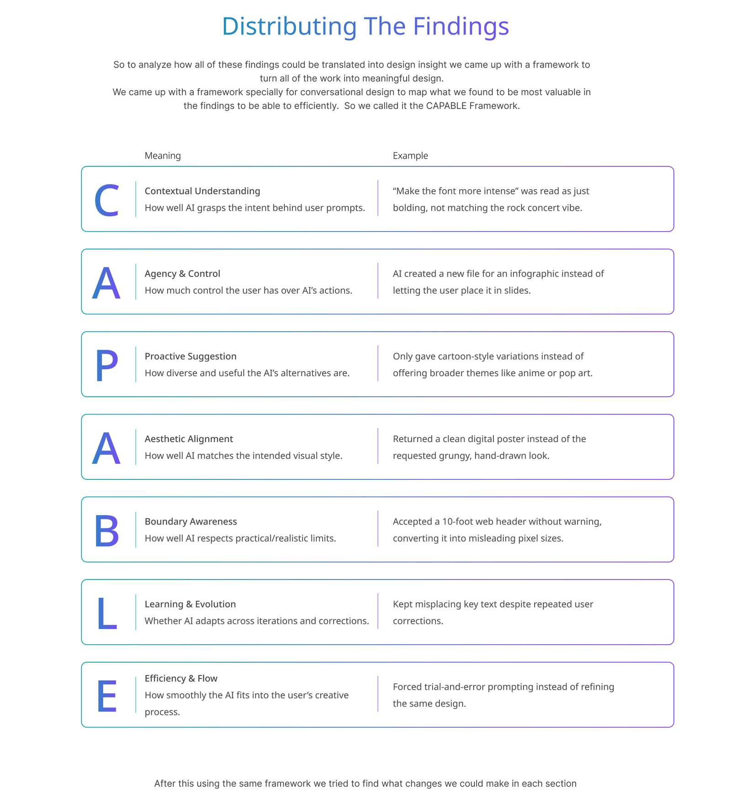
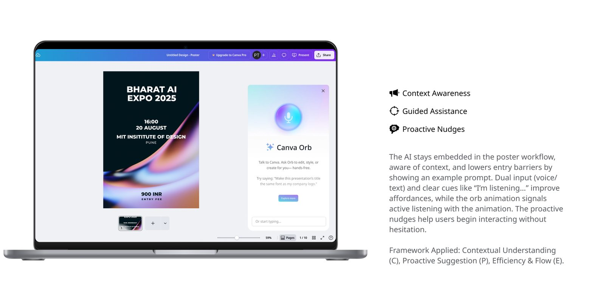
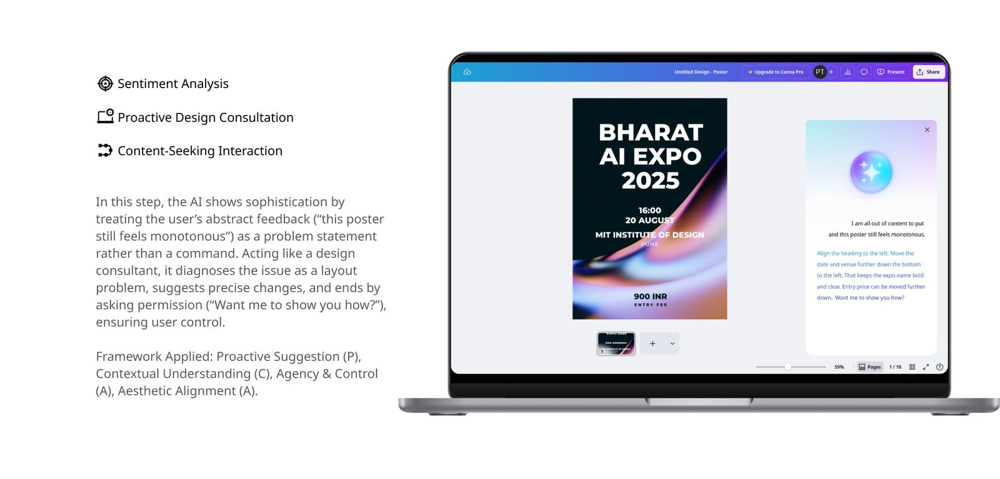
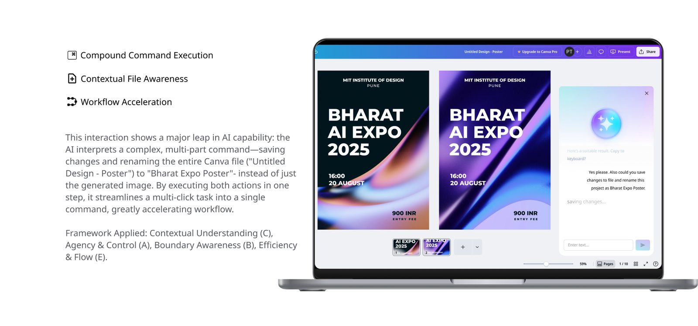

A study of Canva's AI assistant through a bank of 50 prompts, and a redesign that keeps it inside your file and under your control.

"Make the font more intense" was read as bold, not rock concert. An infographic landed in a new file instead of the slides. Corrections were forgotten one prompt later. Most of Canva's users are not designers, so the assistant has to understand intent, not just instructions.
A pitch deck for a brand, a cartoon social post and more, each with notes on what the AI got right and where it drifted.

Contextual understanding, agency, proactive suggestion, aesthetic alignment, boundary awareness, learning and efficiency, each tied to a failure we saw.

The AI lives beside the poster, shows an example prompt, and signals when it is listening or working.

Told the poster "still feels monotonous", it diagnoses a layout problem and asks before changing anything.

It saves the changes and renames the whole file, not just the image, from a single compound request.

The full case study, with every step of the process, is on Behance.